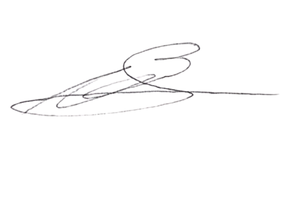

Formación profesional avalada por AFA y CONMEBOL
ConsultarFundada el 21 de Marzo de 2021 bajo la dirección de Cristian Baldrich, entrenador con licencia PRO que le acredita para dirigir equipos profesionales, nuestra escuela se ha posicionado como un centro de excelencia en la enseñanza de las metodologías y tácticas más innovadoras del fútbol.

En nuestra escuela ofrecemos una formación integral para aspirantes a entrenadores de fútbol. Nuestro equipo de profesionales imparte clases tanto de manera presencial como a través de la plataforma Zoom. El programa contempla asignaturas teóricas y prácticas que permitirán a los alumnos obtener licencias en fútbol 11 y fútbol sala, abarcando todos los niveles desde iniciación hasta profesional. Esta es una excelente oportunidad para quienes deseen desarrollar una carrera sólida en el ámbito del entrenamiento deportivo.
Ser mayor de 18 años. Las personas entre 18 y 24 años deberán contar con título secundario, excepto las mayores de 25 años. Cualquier consulta comuníquese con secretaría.
Las clases son semi presenciales y también se dictan de manera virtual por medio de la plataforma Zoom.
La carrera de Futsal dura 2 años (Licencia B y A). La de Campo dura 3 años: Licencia C y B, luego A y finalmente PRO. Clases: Lunes, Martes y Jueves 21hs (Campo) y Lunes 21hs + Miércoles 22hs (Futsal).
Consultar a través de nuestras redes sociales.
Preguntá por la carrera de entrenador de arqueros para 2027
Teléfono: +54 9 2944 303011
Email: info@atfabariloche.com
Seguinos en nuestras redes sociales